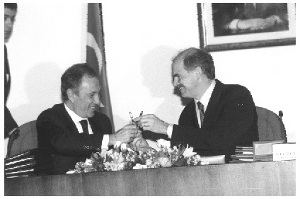

Dışişleri Bakanlığı’ma son vermemden bu yana, bir yıldan fazla süre geçti. Türk-Yunan ilişkilerini, gerçekleştirdiklerimizi, geçmişin tahlilini şimdi daha rahat yapabilecek bir konumdayım. Gerçekten, ne oldu da, iki geleneksel düşman, çok kısa sürede barışın yollarını döşeyip, ilerlemeye başladılar? Bundan sonra da mutlaka karşılarına çıkacak sorunları daha kolay aşacakları bir anlayış ve güven zeminini nasıl oldu da yaratabildiler?
1) Önce şu inancımı belirteyim: Birbirini engellemek yerine birbiriyle dost olmakta hem Türkiye’nin hem de Yunanistan’ın büyük menfaati vardır. Türkiye’nin bu bilince her zaman Yunanistan’dan daha yakın olduğu söylenebilir. Türk-Yunan dostluğu bizim açımızdan da kolay değildi. Ama Yunanistan için daha zordu. Çünkü, Yunan yöneticileri belki yüzyıldır kendi halklarını Türkiye’ye karşı şartlamışlardı. Yunanistan’ın kendi kimliğini bulmak, kendi siyasal bütünlüğünü sağlamak ihtiyacında, Türkiye ‘düşmanlığı’ ve Türkiye ‘korkusu’, Yunan karar ve yönetim merkezlerince bir araç gibi kullanılmıştı. Yunan yönetimleri iç siyasette ve ekonomide ne zaman sıkışsalar, kendi halklarının demokrasi ve gelişme taleplerini karşılamakta ne zaman zorlansalar, başvurdukları yöntem aynı olmuştu: Türkiye korkusunu ve Türkiye düşmanlığını körüklemek, böylece, halkı asıl sorunlardan ve yöneticilerinin yetersizliğini görme yeteneğinden uzaklaştırmak...
Yunanistan’ın bu geleneksel siyaseti, hem kendisine zarar vermiştir hem de Türkiye’ye: Yunan halkı sürekli bir korku içinde yaşatılmıştır; kendini güvende hissedememiştir. Ekonominin, özellikle de sanayinin gelişimi bundan olumsuz etkilenmiştir. Kişi başına millî gelirinin yüksekliğine rağmen Yunanistan, dünya ile rekabet edebilen büyük sanayi dallarına, ciddi sanayi ürünleri ihracatına hâlâ sahip değildir. Bunun bir nedeni de, Türkiye bağlamında yaşadığı ve yaşattığı korku ortamı olmuştur. Kendini tehdit altında gören ve böyle tanıtan bir ülkede, ne kendi sermayesi ne de dış sermaye uzun vadeli sanayi yatırımlarını göze alabilmiştir. Yunanistan’ın Türkiye karşıtı siyaseti, Türkiye dostluğunun ona sağlayacağı ekonomik imkânlardan da tabiatıyla onu yoksun bırakmıştır. Yıllık millî geliri ‘satınalma gücü esasında’ (ppp) 350 milyar doları bulan 70 milyonluk bir komşuyla ekonomik ve ticari ilişkinin avantajını, Yunanistan yıllarca kullanamamıştır.

İsmail Cem ve Yorgo Papandreu, sözleşme imzasından sonra kalem değişimi yaparken.
Türkiye’den baktığımızda da tablo pek farklı değildir. Türkiye, nüfusu az bile olsa tek ‘zengin’ komşusuyla ticaret yapmaktan, bu pazara girmekten kendini yoksun bırakmıştır. Gerilim politikaları, Yunanistan gibi Türkiye’yi de daha yüksek savunma harcamalarına mecbur etmiş, koskoca bir ‘Ege Ordusu’ kurulmuştur. Yunanistan’ın bize –bizim de zaafımızdan yararlanarak– verdiği en büyük zarar, Türkiye’nin dünyadaki görünümünü zedeleyen, Türkiye karşıtlığına uluslararası boyut katan Yunan faaliyetleri olmuştur. Yunan tarafı, abd ve Batı Avrupa ülkelerinde yerleşik Yunanlıların etkisini de kullanarak ve büyük paralar harcayarak, son derece olumsuz bir ‘Türkiye imajını’ dünyada oluşturmayı başarabilmiştir. Geceyarısı Ekspresi filmini finanse edip, birçok ülkede bu filmin gösterileceği sinemalar kiralamaktan, uluslararası basında ısmarlanmış paralı yayınlar yaptırmaya kadar, Yunanistan etkili olmuştur. Türkiye’deki her olumsuz gelişmeyi uluslararası basın ajanslarındaki, Amerikan ve İngiliz basınındaki adamlarıyla çarpıtarak büyütmeye, yaymaya kadar, her yöntemi Yunan propagandası ustalıkla kullanmıştır. Bakanlığım döneminde bu propagandanın etkisini bir ölçüde kırabilmek için çok emek verdiğimden, konunun sıkıntısını bilirim. Bir Yunan Dışişleri Bakanı Türkiye aleyhine (Pangalos dönemindeki gibi) nerede ağzını açsa, saçma sapan konuşsa, bunun haberi ertesi gün Reuters, Associated Press, United Press, France Press hattâ Rusya’nın Tass’ı gibi dünya haber ajanslarının bültenlerinde yer alırdı. Ben, ancak çok gerçekçi, titiz bir cevap metnini bizzat hazırlayarak, girişim üzerine girişim yaparak, kişisel dostluklarımı, yazarlık ilişkilerimi kullanarak, o da bir ölçüde ve bazen haber ajanslarında yer bulabilirdim. Onlarca yıla dayalı Yunan propagandası öylesine yer etmişti ki, gene onlarca yıl Türkiye’den öylesine cevapsız bırakılmıştı ki, onlar ne deseler varsayım olarak ‘doğru’ kabul edilmekteydi, biz ne söylesek ‘yanlış’ peşin hükmüyle karşılanmaktaydı. Daha önce değinmiştim ama, tekrar etmekten kendimi alamıyorum: Yunanistan, Ege sorunlarının çözümü için tek ve mutlak uluslararası hukuk yönteminin, Lahey’deki Uluslararası Adalet Divanı olduğunu, Türkiye divana başvurmayı kabul etmediği için uluslararası hukuku çiğnediğini yıllar yılı tekrarlamış ve buna bütün Avrupa’yı, abd’yi inandırmıştı. Bizim taraftan ise bir Allah’ın kulu çıkıp da, uluslararası hukukun bu olmadığını, uluslararası hukukun ve Birleşmiş Milletler’in, çok sayıda başka yöntemi sıraladıktan sonra Adalet Divanı’nı zikrettiğini, ab’nin ise, ancak bütün diğer yöntemlerin denenip başarısız kalması halinde Adalet Divanı’na işaret ettiğini, ne kendi halkımıza ne de dünyaya hatırlatabilmişti. (Bu konuyu 1997 sonrasında ısrarla uluslararası gündeme getirmemiz sayesinde aldatmaca ve istismar büyük ölçüde son bulabildi.)
İşte böyle bir ortamın ürünü olarak, Yunan propagandası, Yunanistan’ı Türkiye karşısında her zaman ‘mazlum’, iddialarında ise her zaman ‘haklı’ gösterebilmeyi başarmıştı. Uluslararası kamuoyunu buna inandırmıştı. Bu propaganda sonucunda, Türkiye, haksız, saldırgan, işgalci olarak, uzlaşmaz olarak resmedilmiş ve bu resim de dünyaya kabul ettirilmişti. Hele bu fotoğrafa bir de insan hakları ihlalleri, demokrasi eksikleri eklenince, Yunan propagandası, kendini aşan bir etkinliği yaratabilmiştir. Bütün bunların sonucunda, ‘mazlum Yunanistan’, ‘saldırgan Türkiye’ fotoğrafı zihinlere kazınmıştır. Türkiye, bundan büyük zarar görmüştür, dış ilişkilerinde, başka coğrafyalardaki menfaatlerinin takibinde ve ekonomisinin gelişiminde...
Türkiye ve Yunanistan karşıtlığının Türkiye’ye verdiği öteki önemli zarar, Türkiye’nin Avrupa Birliği’yle ilişkilerindedir. Bazen diğer üye ülkeleri kullanan, bazen doğrudan hareket eden Yunanistan, Türkiye’nin ab ilişkilerini sürekli engellemiştir. Bunun, ‘yakınlaşma dönemi’ öncesinde Yunanistan’ın ‘millî politikası’ olduğu söylenebilir. ab’nin bazı etkin üyeleri, Yunan siyasetinin neredeyse bir uzantısı gibi davranmışlardır. Örneğin, 1996’da Türkiye’yi ziyaret eden Alman Dışişleri Bakanı Kinkel, ‘... adaylığınızı kabul etmemiz için başlıca şartın, Yunanistan’la ilişkilerin düzelmesi’ olduğunu tbmm Dışişleri komisyonunda söylemiştir. 1997 Haziranı’nda bakanlığa geldiğimde, ab çevrelerinin benzer telkinlerine köşeli cevaplar verdiğimi hatırlıyorum. ‘... Uzlaşma için, her iki tarafın da gayreti gerektiğini, bu gerçeği unutup sadece Türkiye’den beklenti tekrarlamanın hem çifte standart olduğunu hem de hiçbir işe yaramayacağını’, 1997 Aralık ayında New York Times ve Le Monde’da yayımlanan makalelerimde anlatmıştım. Evet, haksızlıktı ama, Yunanistan, bizim ab sürecimizi pekâlâ engellemekteydi.
Bizim ab, Yunanistan, Türkiye üçgeninde ab ile ilişkilerimiz, okullarda öğretilecek kadar ilginç bir ibret olayıdır. Bakanlığa geldiğim 1997 yılında geriye bakılınca, görülen şuydu: ab, Yunanistan bağlamında Türkiye’ye ne söz vermişse, hiçbirini tutmamıştı. Ben bu geçmişin bilincindeydim; ilk günden başlayarak, ab ile ilişkilerimizin Yunanistan boyutu taşıyan konularında, iddialı, talepkar, hattâ suçlayıcı oldum. Bizim bakanlarımızın, ab’li muhataplarıyla tartışmalarında gündeme hiç getirmediği, unutup geçtiği bazı vahim ab davranışlarını, ısrarla ab ülkelerinin önüne sürdüm. En çarpıcı örnekler, Yunanistan’ın ab üyeliğine kabulü döneminde yaşanmıştı: Türkiye’yi de dengede tutmak, tepkisini yumuşatmak hesabındaki ab, vaat üzerinde vaatte bulunuyor, söz üzerine söz vermekteydi. Ama bunların hiçbiri tutulmuyordu. Bizim bakanlarımız ise, gene ses çıkarmadan bakanlıklarını sürdürüyor, yıllar böyle geçiyordu. Bu konulara değindiğim, “Dünyadan Saf Muamelesi Görmek” başlıklı eski bir yazımda (Nisan 1996) şunları anlatmıştım:
‘... Yunanistan’ın Avrupa Topluluğu’na katılmasından ötürü Türkiye’nin Topluluk’la ilişkilerinde geçmişten ve günümüzden kaynaklanan haklarına hiçbir zarar gelmeyeceğinin güvencesini Avrupa Topluluğu garanti ederek...’ vesaire, vesaire, vesaire...
Gerçekten, bizi yönetenler mi çok ‘saf’, başka ülkeleri yönetenler mi çok ‘cin’?.. Ya da, her ikisi mi?
Kendi hakkına sahip çıkamayan yönetim kadroları karşısında, Yunanistan, hiç vakit kaybetmemiştir. Türkiye’nin anlaşmalardan doğmuş alacaklarına, Avrupa Birliği üyelerinin imzaları ve kefaleti altında olan ödemelere, Yunanistan, ‘ambargo’ koyuvermiştir. Oysa, Türkiye’nin –kendine unutturduğu, adeta kendi toplumundan sakladığı ve de kullanmayı beceremediği– çok açık ve kesin yetkileri, tartışılmaz hakları vardır:
Şu sıra Yunanistan’ın engellemeyi sürdürdüğü ‘alacaklarımız’, tüm AT üyelerinin kesin taahhüdü altındadır. Muhatap, Yunanistan değil, tüm AT üyeleridir. Bizim taraf ise, AT ’nin taahhüdüne aykırı olan bu uygulamayı, Türkiye’nin alacağı olan ödenekleri Yunanistan’ın ‘veto etmesini’, bu ödemelerde kefaleti bulunan AT üyelerinin seyirci kalmasını, ‘olağan, sıradan’ karşılayabilmiştir... Türkiye’yi yönetegelen kadrolar, Türkiye’nin hakkına yeterince sahip çıkmamıştır; Yunanistan’a değil, anlaşmalarda Türkiye’ye karşı kesin taahhütte bulunmuş öteki Avrupa devletlerine yönelik ciddi, etkili ve müeyyideli bir tavırdan, malûm alışkanlıklar ve kompleksler nedeniyle, uzak durmuşlardır.
Oysa, Avrupa Topluluğu’nun Türkiye ile yaptığı anlaşmalar çerçevesinde, ne Yunanistan’ın, AT ’nin temel taahhüdünü çiğneyen bir ‘veto’ yetkisi olabilir, ne de, öteki AT üyelerinin, kendi temel taahhütlerini çiğneyen bu vetoyu kullandırtmak yetkisi...
ANLAŞMALAR NE DİYOR?: Tarih, 24 Haziran 1975; o dönemdeki ismiyle ‘Avrupa Ekonomik Topluluğu’nun’ en üst organı olan Konsey, Lüksemburg’da toplanarak, ... üyelik başvurusunda bulunan Yunanistan’ hakkında karar alırken, Türkiye’nin konumunu ve Türkiye’ye karşı taahhüdünü şöyle açıklıyor:
‘... Konsey, (icra organı niteliğindeki) Komisyon’dan, Yunanistan’ın (üyelik) başvurusu hakkındaki görüşünü eylül oturumunda ilk tartışmayı başlatmak üzere istemiştir.
Bu bağlamda, Konsey, şu vurgulamayı (emphasize) yapmak üzere anlaşmaya varmıştır:
a) Topluluğun, Türkiye ile çok yakın ortaklık ilişkilerini sürdürmek ve geliştirmekteki menfaati.
b) Yunanistan’ın üyelik başvurusunun incelenmesinin, Topluluk’la Türkiye arasındaki ilişkileri ve Avrupa Ekonomik Topluluğu ile Türkiye arasındaki anlaşmalardan doğmuş hakları etkilemeyeceği gerçeği.’
Bu kararla, Türkiye’nin 1963 Ankara Anlaşması’yla başlayan ve çeşitli başka anlaşmalarla, protokollerle süren AT ilişkilerinden doğmuş haklarının, Yunanistan’ın muhtemel üyeliğinden etkilenmeyeceği taahhüt ediliyor.
‘YUNAN-TÜRK ANLAŞMAZLIĞINDA TARAF DEĞİLİZ’: Avrupa Topluluğu, söz konusu tavrını ve taahhüdünü, 29 Ocak 1976 tarihli ‘Yunanistan’ın Üyelik Başvurusu hakkında Komisyon Görüşü’ başlıklı açıklamasında genişleterek sürdürüyor:
‘... Yunanistan ile, bir ortak ülke olan ve onun da Topluluğa tam üyeliği nihai hedef olan Türkiye arasındaki anlaşmazlıklarda Avrupa Topluluğu taraf değildir ve olmamalıdır. Topluluk, farklılaşmalarına adil ve kalıcı çözümler bulmaları için Yunanistan’ı ve Türkiye’yi uyarmalıdır (...)
Ek olarak, Konsey’in 24 Haziran 1975 tarihli açıklamasına güç kazandıracak belirli adımlar, Yunanistan’ın üyelik başvurusunun incelenmesinin Topluluk’la Türkiye arasındaki ilişkileri ve Avrupa Ekonomik Topluluğu ile Türkiye arasındaki anlaşmalardan doğmuş hakları etkilemeyeceği bağlamında atılmalıdır.’
‘ANKARA ANLAŞMASI VE PROTOKOLLER DEĞİŞMEYECEK’: 5 Şubat 1980’de, AT-Türkiye Ortaklık Konseyi 25. Toplantısı’nı yapıyor ve Komisyon Başkanı, şu resmi taahhüdü tekrarlıyor:
‘... (Komisyon) Başkanı, (Avrupa) Topluluğu’nun Haziran 1975’te, Yunanistan’ın üyelik başvurusundan sonra aldığı tavrı teyit eder ve bu bağlamda, Türkiye ile ortaklık ilişkilerinin kalıcılığına ve gelişmesine bağlılığını (belirtir) ve Türkiye’ye yeniden güvence vererek (Topluluğun) yeni genişlemesi sonucunda Topluluk’la Türkiye arasındaki ilişkilerin etkilenmeyeceğini ve (Türkiye’nin) Ankara Anlaşması’yla ve Protokollerle garanti edilmiş haklarının değişmeyeceğini açıklar.’
Durum, çok net:
Avrupa Topluluğu, Ankara Anlaşması ve Protokollerle Türkiye’ye sağlanmış hakların sürekliliğini, bunların, Yunanistan’ın üyeliğinden etkilenmeyeceğini ısrarla ve defalarca taahhüt ediyor. Sonra, Türkiye’nin anlaşmalardan doğmuş haklarını, alacaklarını, anlaşmalara ve taahhüde aykırı bir Yunan vetosu gerekçesiyle yok sayıyor; kendi taahhüdünü göz göre göre çiğniyor. Biz de bunu, ‘sineye çekiyoruz’.
Avrupa Topluluğu, ‘Yunanistan’la Türkiye arasındaki anlaşmazlıklarda taraf olmadığını ve olmayacağını’ açıklıyor, bir bakıma, taahhüt ediyor. Yunanistan’ın üyeliği sonucunda böyle bir işleve özenmeyeceğini belirtiyor. Sonra, bu sözler ve taahhüt yok sayılıyor; AT, Türk-Yunan ilişkilerinde açık bir taraf olabiliyor, Türk-Yunan anlaşmazlığından kaynaklanmış sorunları gerekçe göstererek, Yunanistan’ın bu sorunlara dayalı ‘vetosunu’ meşru kabul ediyor, ona geçerlik ve güç kazandırıyor...
Ya Türkiye’yi yönetegelen kadrolar ne yapıyor?
‘... Aman, Avrupalı dostlarımızı ürkütmeyelim, hem vaatte de bulundular, bizim sıkıntımızı dikkate alacaklarmış’ diyerek, kendilerinden başka kimsenin pek duymadığı sessiz protestolarla yetiniyorlar...
Yani, teslimiyeti yansıtan bir yaklaşımla, durumu idare ediyorlar...
Doğrusu, benzer anlayışları ve benzer saflıktaki yönetim kadrolarını biz de karşımızda bulsak, Avrupa Topluluğu’nun ve Yunanistan’ın bize yaptığının benzerini biz de onlara yapardık...
Açıkçası, Avrupa Topluluğu’nun Türkiye’deki en hızlı savunucuları, bu teslimiyetçilikleri ve bu yanlışlarıyla, aslında, Türkiye’nin Avrupa Topluluğu’yla ilişkilerini kendi elleriyle bozuyorlar, bu ilişkilerin geleceğini bizzat engelliyorlar...
Bu teslimiyet, çok doğal olarak, Türkiye’yi ‘saf mevkiinde’ tutan başka girişimlerin yolunu açmıştır. İlginç ve yakın örnek, Türkiye ile ‘Gümrük Birliği’ anlaşmasını, teamülünde ve uygulamasında yeri ve gereği yokken, AB tarafının ‘parlamentoya’ sevk etmesi olmuştur. Böylece, AB ülkeleri, anlaşmanın kabulünü ek bir makamın onayına bağlayarak, anlaşma metnini etkileyebilecek ek bir ikna aracı elde etmişlerdi. Bizimkiler ise sesini bile çıkaramamıştı...
TÜRKİYE NEDEN OYA SUNULDU?: Türkiye’yi yönetegelen kadroların elinde, şu malûm ‘Gümrük Birliği’, bir yanlışlıklar komedisi ve bir saflıklar abidesi olarak gelişmiş, Türkiye açısından olabileceği en kötü noktaya sürüklenmiştir. Türkiye sorumlularının kendi adlarına ‘prim yapmak’ telaşı içinde, olan, Türkiye’ye ve topluma olmuştur.
Bir defa, Türkiye’nin Gümrük Birliği’ne girişini Avrupa Parlamentosu’nda ‘oylatmayı’ kabullenmek, buna rıza göstermek, devam etmesi kaçınılmaz bir ‘saf mevkiine konmanın’ adımı olmuştur. Nereden çıkmıştır, bu ‘oylanma’ zorunluğu? Belgelerde, anlaşmalarda bulunmayan, Avrupa Topluluğu’nun temel yasasında bu amaçla yer almayan bir ‘usulü’ kimler Türkiye’nin önüne çıkarmıştır ve Türkiye bunu nasıl, neden kabul etmiştir?
Avrupa Parlamentosu’nun hangi durumlarda oylama yapabileceği, Birliğe ya da Birliğin bir faaliyet alanına üyeliğin hangi süreç içinde ve hangi organlarca kararlaştırılacağı, Birliğin yasalarında belirlenmiştir ve tek tek sayılmıştır. Bunların içinde, ‘Gümrük Birliği’ne katılacak ülkenin üyeliğinin Avrupa Parlamentosu’nda oylanması’ yoktur. Nitekim, Türkiye’nin Gümrük Birliği’ne üye olması, 1960’lardan beri süregelen anlaşmalarda öngörülmüş, ‘kendiliğinden’ gerçekleşmesi öngörülmüş bir durumdur. Ancak, Türkiye’ye şu ya da bu nedenle etki yapmak isteyenler, anlaşmalarda bulunmayan bir ‘önkoşul’ icat ederek, Türkiye’nin Gümrük Birliği’ne katılmasını ‘Avrupa Parlamentosu’nun onayına’ bağlayıvermiştir.
Bizim tarafta ise, ‘... Bir an önce ve nasıl olursa olsun kendimizi gümrük birliğine katalım, bu ‘Avrupa fütuhatını’ iç politikada malzeme olarak kullanalım’ telaşındaki sorumlular, bunu hemen kabul etmiştir. Avrupa Topluluğu yasa ve kurallarının bu amaç için öngörmediği, Türkiye ile Topluluk arasındaki anlaşmaların yer vermediği bir koşulu, ‘Türkiye’nin AT Gümrük Birliği’ne üyeliğini AT Parlamentosu’nun oyuna sunmak’ koşulunu, bizimkiler, geleneksel teslimiyetçi alışkanlıklarıyla hemen benimseyivermiştir.
Türkiye’yi yönetegelen kadroların ve özellikle Çiller yönetiminin dış politikadaki çocuksu davranışları, Türk dış politikasını içinden çıkılması zor bir duruma düşürmüştür. Bir yandan kişiliksizliğin, cesaretsizliğin örneklerini veren politikalar, öte yandan ‘iç tüketime’, ‘şova’ dönük davranışlar, bilgisizlik ve yetersizlikle de karışınca, ortaya ‘saflığın’ da ötesindeki bir görüntü çıkmıştır. Neredeyse, başkalarına yaranmayı ve onların telkinine uymayı alışkanlık edinen, yabancılardan gelecek ‘aferini’ abartan, dış basındaki iki satırlık haberi, bir yabancı Başkanın iki övücü cümlesini ‘başarı’ zanneden yaklaşımlar... Türkiye’yi yöneten kadrolar öyle bir ‘saflık’ sergilemiştir ki, bu ortamda, ellerindeki hakkı bile, anlaşmalardan kaynaklanan somut dayanaklarını bile ‘unutuvermişlerdir...
Sabah gazetesi, 1 Nisan 1996
Türkiye ile Yunanistan’ın 1999 yılındaki yakınlaşması, Türkiye’nin ab yolundaki en büyük engelini de belli ölçüde etkisizleştirmiştir. Adaylığın kabulünü ve ilanını mümkün kılmıştır. Hedefe uzanan yolların önünü açmıştır.
Türkiye’nin, Yunanistan’la iyi ilişkiler geliştirmek iradesi, benim yer aldığım hükümetlere özgü değildir. Önceki dönemlerde de, birçok Başbakan ve Dışişleri Bakanı aynı iradeyi taşımıştır, bunu uygulamaya aktarmanın yollarını aramıştır. Bizim farkımız, koşulları ve fırsatları daha doğru değerlendirmemiz, siyaseti bilerek ve ustaca geliştirmemiz oldu. Asıl değişim, Yunan tarafındaydı. Yunanistan, nasıl oldu da, kırk yıllık Türkiye karşıtlığı siyasetinden uzaklaştı ya da uzaklaşmak zorunda bırakıldı; nasıl oldu da, ab yolumuzdaki engel, birçok örnekte, desteğe dönüşebildi?
Cevap, şöyle aranabilir: Türkiye olarak, iki yıllık bir uğraşla, uluslararası kamuoyundaki olumsuz ‘imajı’, bir ölçüde düzeltebilmiştik. Yabancı kamuoyuyla ve basınla ilişkiler, makaleler, demeçler, Ege konusundaki Yunan propagandasının temelsiz olduğunu değişik ortamlarda sergileyişimiz, Ecevit hükümetinin demokratik reformları başlatması vb. Uluslararası kamuoyu ve imaj dengeleri tabii ki Yunanistan lehine olmaya devam ediyordu; ancak, bu dengelerde artık Türkiye de vardı.
Geçmişe kıyasla Türkiye için daha az elverişsiz böyle bir ortamda, Yunanistan’ın fahiş bir hata yapması ve bizim, onun bu hatasını çok iyi değerlendirip uluslararası arenada Yunanistan’a karşı özenle kullanmamız, Yunanistan’ı, politika değiştirmeye yöneltmiştir; hattâ, bir ölçüde mecbur bırakmıştır. ‘Bir ölçüde’ diyorum, çünkü, bu değişimde, Yunan siyasetinin ve kamuoyunun, kendi ülke menfaatini Türkiye ile karşıtlıkta değil, uzlaşmakta gören kesimlerinin de büyük payı olmuştur.
Hemen her konuda olduğu gibi, dış siyasette de, olaylar ‘objektif’ koşullar ve ‘sübjektif’ koşullar etkisinde gelişir. Belirleyici olan, elbette ‘objektif koşullardır. Ama sübjektif koşulların da yeri vardır. Bizim konumuzda, Papandreu’nun kişiliği ve Yunanistan’ın menfaatini doğru saptayabilmesi, doğru olarak saptadığını hayata geçirecek cesarete ve beceriye sahip bulunması, sonucu mümkün kılmıştır.
1999 başlarına biraz daha yakından bakalım: Uluslararası alanda saygınlığı artmakta olan bir Türkiye, Yunanistan’ı, deyim yerindeyse cürm-ü meşhut halinde yakalıyor. Yunanistan devleti, Interpol tarafından kırmızı listeyle aranan bir teröristi, Türkiye’de on binlerce insanın ölümüne yol açmış birisini, resmen ve hükümeti aracılığıyla kaçırmıştır ve onu Kenya’nın başkentindeki Yunan Büyükelçiliği’nde saklamaktadır. Plan, doğrudan doğruya Yunan Dışişleri Bakanı’nın ve Yunan gizli servisinin eseridir. Bizim elimize, böylece, Yunanistan’ı resmen ‘terörist devlet’ ilan etmemizin, Yunanistan’ın terör konusundaki zaten şaibeli tutumunu dünyanın gözüne sokmamızın imkânı geçmekteydi. Doğrusu, bu imkânı çok iyi kullandık. Bütün ülkelerdeki büyükelçilerimizi seferber ettik. Görev yaptıkları ülkenin devletine ve kamuoyuna Yunanistan’ın terör boyutunu, uluslararası barışa getirdiği tehdidi anlattılar. Önceki sayfalarda örnekleri verilen konuşmalarımı birbiri ardından sıraladım. Türkiye’nin Dışişleri, bütün birikimi, gücü ve son zamanda edindiği etkinliğiyle, Yunanistan’a karşı diplomatik hücuma geçti. Ve bu girişimlerimiz, Yunanistan’ın büyük menfaatine, dünya ile tüm ilişkilerine zarar veren kalıcı izler bırakmaya başladı.
Yunan Başbakanı Simitis, bu durumda, yapması gerekeni yaptı. Buna mecburdu. Aksi halde sadece Yunanistan’ın uluslararası konumu, nato’daki, ab’deki, dünya kamuoyundaki yeri büyük yara almakla kalmayacaktı; kendi hükümeti de istifaya zorlanacaktı. Simitis, önce Dışişleri Bakanı Pangalos’u görevden ayrılmak zorunda bıraktı, sonra, Kenya’daki olayın sorumluları hakkında soruşturma açtırttı. Nihayet, uzlaşmacı ve barışçı tutumuyla, farklı bir Türkiye politikası uygulamak düşünceleriyle bilinen Papandreu’yu Dışişleri Bakanlığı’na getirdi. Yani, Yunanistan, hem terörbaşının kaçırılması, terörün desteklenmesi fiillerini ikrar etmekteydi, hem de, Türkiye siyasetine değişiklik getireceğinin işaretlerini vermekteydi. Bizim açımızdan, bunlar yeterli değildi. Bir yandan, bu özlediğimiz gelişmenin keyfini bakanlıkta yaşıyorduk, bir yandan da, Yunanistan’ı sıkıştırarak Türkiye menfaatine yeni bir ortam yaratmanın yollarını araştırıyorduk. Aslında, farklı iki siyaset izlememiz düşünülebilirdi: İlki, Yunanistan’a yönelik saldırıları sürdürmek, Yunanistan’a mümkün olduğunca büyük zarar vermek. Geçmişte bize yaptıklarını hatırlayınca, bakanlıktaki arkadaşlarımızın tercihi buna doğru yöneliyor, ama sonra, daha sakin ve Türkiye’nin menfaati açısından düşünüldüğünde, bundan vazgeçiliyordu. Yunanistan’a zarar verecektik ama, kendimiz bir şey kazanmayacaktık. Kaldı ki, Yunanistan boş durmayacak, teröre bulaşmasını ‘bir kaza’ olarak niteleyecek, bakanın değişmesini, soruşturma açılmasını, iyi niyetine kanıt diye gösterecek, lobilerini, dünya basınındaki yandaşlarını seferber edecekti. Yunanistan’a, onun terör konusundaki densizliğine ve suçüstü yakalanışına kızan Batılı devletler ve kamuoyları, zamanla, yumuşayabilecekti. Çünkü, özünde ve aslında, öncelikle Yunan tarafıydılar. Açıkçası, o sırada bizden yana esen rüzgârların etkisi, zamanla zayıflayabilecekti. Harekete şimdi geçilmesi gerekiyordu.
Türkiye’nin menfaati, oluşan yeni durumu en akıllıca kullanmak ve bundan Türkiye’nin yararına gelişmeler çıkartmaktı. Bu gelişmeleri şöyle öngörmekteydim: Yunanistan’ın terörle ilişkisini bir bakıma kabulü anlamına gelen, ‘Terörle Birlikte Mücadele’ anlaşması yapmak; Suriye’ye karşı 1998 sonbaharında başarıyla geliştirdiğimiz bu yöntemi, şimdi Yunanistan konusunda uygulamak; bunun gibi, iki ülkenin menfaatine işbirliği alanları saptayıp ortak çalışmalar örgütlemek; Türkiye ve Yunanistan arasında karşılıklı menfaate dayalı sağlam bir ilişkiyi başlatmak; Yunanistan’ın Türkiye karşıtlığının genel dengelerde ve ab ortamında Türkiye’ye verdiği zararı sınırlamak; nihayet, bu oluşumlar gerçekleşirse, iki ülke halkının esenliğine ve güvenliğine, ekonomik gelişmesine, Ege ve Balkanlar’da barış ve istikrara yolları açmak.
Şimdi geriye baktığımda, bu hedeflere büyük ölçüde ulaşabildiğimizi düşünmekteyim. Türk-Yunan ilişkilerinde elbette zaman zaman sorunlar çıkacaktır; gerilimler yaşanacaktır. Çünkü çok yönlü, çok boyutlu ilişki söz konusudur, çünkü, geçmişin şartlanmaları özellikle bazı Yunan çevrelerinde hâlâ etkilidir. Ancak, biz Papandreu ile temelleri sağlam attık, zemini sağlam oluşturduk. Bu temeller ve zemin üzerinde, sorunların üstesinden gelmek de, gerginlikleri hafifletmek de artık mümkün olacaktır. Bizim başlattığımız yakınlaşmadan kazanan, son tahlilde, Türk ve Yunan halklarıdır, Ege’nin ve Balkanlar’ın istikrarıdır, barışıdır.